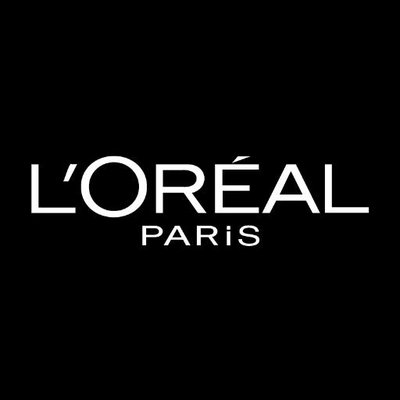
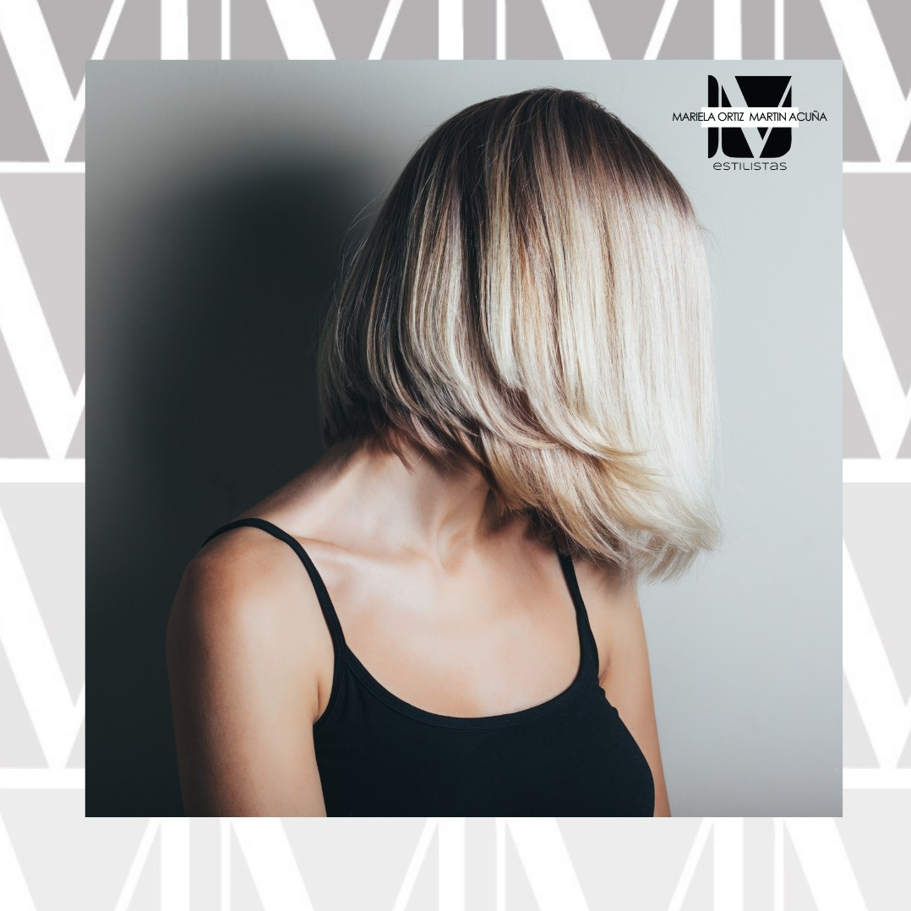
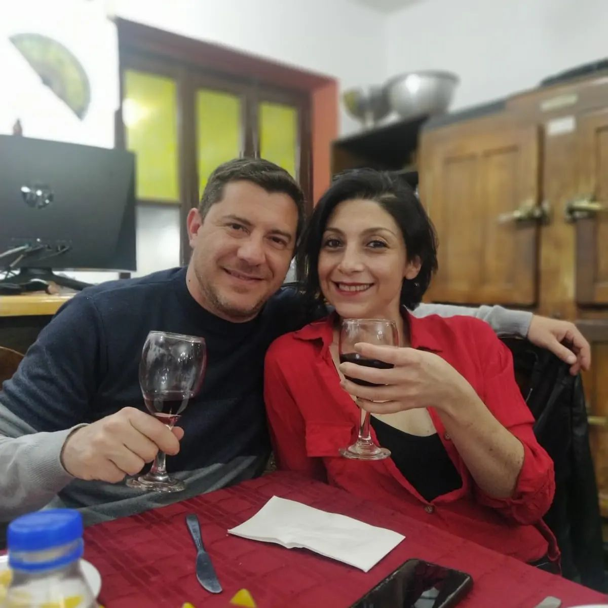
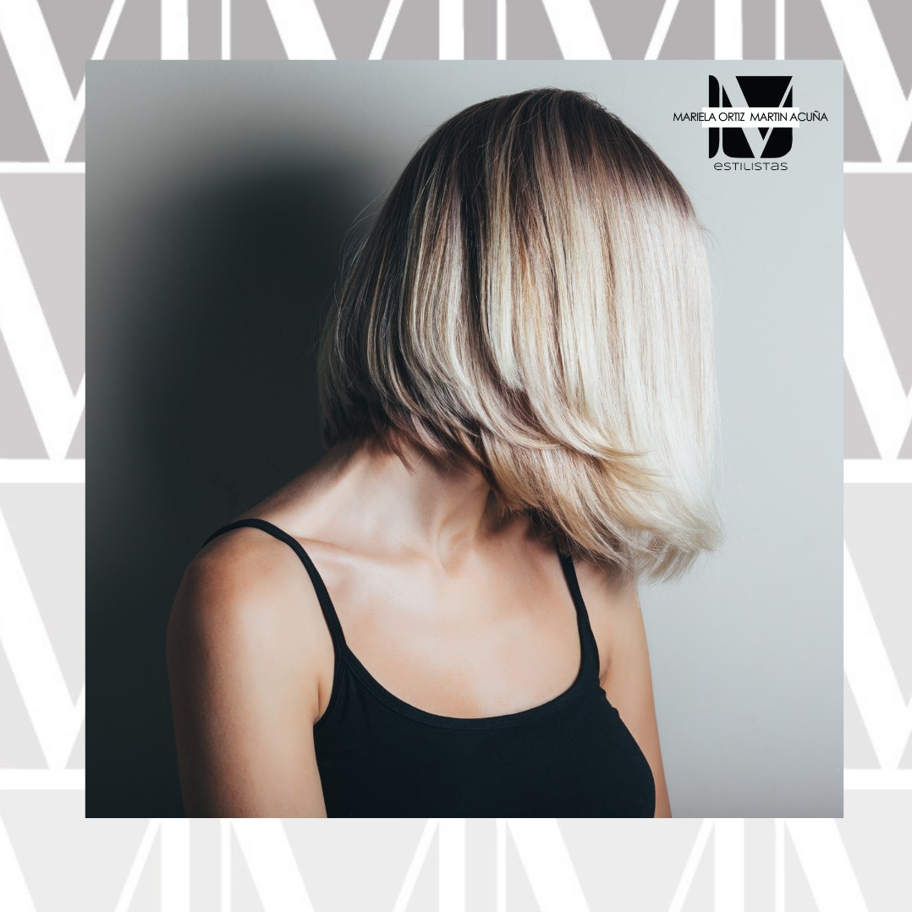
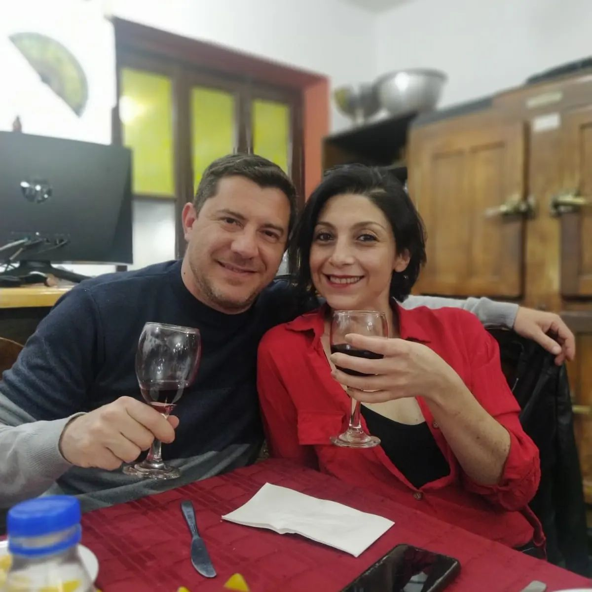

Tipos de productos y tratamientos:
*Acondicionador: Normalmente se utilizan para aportar brillo, suavidad y facilitar el peinado. Más productos Loreal
*Ampolletas: Contienen aceites y proteínas que devuelven al cabello brillo y fuerza. Más info!!
*Cremas: Tratamiento Cremas Loreal
*Mascarillas: Tratamiento Mascarillas Loreal
*Lociones capilares: Tratamiento oleos Loreal
*Keratina: Tratamiento keratina Loreal
*Utilizamos productos profesionales de loreal paris para más detalles:  LorealParis
Productos recomendados de nuestra empresa visitanos en Instagram
#Mechas:
El objetivo es jugar con las tonalidades de los mechones para crear luminosidad, volumen y movimiento.
Mientras los más claros iluminan y ensanchan, los más oscuros enmarcan y reducen.
Si tu rostro es alargado pídele a tu colorista que “los más próximos al rostro sean rubios,
partiendo desde las sienes y sobrepasando la barbilla, para difuminar la verticalidad del rostro”
#Renová tu imagen con nosotros, logra el pelo que deseas!!
Cortes
#Compartimos con ustedes momentos y un ambiente calido de trabajo.
 Te esperamos!!
Tipos de productos y tratamientos:
*Acondicionador: Normalmente se utilizan para aportar brillo, suavidad y facilitar el peinado. Más productos Loreal
*Ampolletas: Contienen aceites y proteínas que devuelven al cabello brillo y fuerza. Más info!!
*Cremas: Tratamiento Cremas Loreal
*Mascarillas: Tratamiento Mascarillas Loreal
*Lociones capilares: Tratamiento oleos Loreal
*Keratina: Tratamiento keratina Loreal
#Mechas:
El objetivo es jugar con las tonalidades de los mechones para crear luminosidad, volumen y movimiento. Mientras los más claros iluminan y ensanchan, los más oscuros enmarcan y reducen. Si tu rostro es alargado pídele a tu colorista que “los más próximos al rostro sean rubios, partiendo desde las sienes y sobrepasando la barbilla, para difuminar la verticalidad del rostro”
#Renová tu imagen con nosotros, logra el pelo que deseas!! Cortes
#Compartimos con ustedes momentos y un ambiente calido de trabajo.  Te esperamos!!